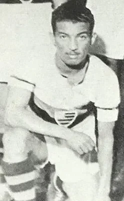

Photo source ↗C.R. Flamengo poster, cropped by Praxides · Public domain
The profile
Zizinho
Zizinho was born Thomaz Soares da Silva in São Gonçalo, Brazil. He came through Flamengo and became one of the country's leading attacking midfielders before the World Cup arrived in Brazil.
He played for Flamengo, Bangu and São Paulo, using quick feet and precise passes to open space for teammates. He could move between midfield and attack and was admired for the range of his game.
At the 1950 World Cup, Zizinho led much of Brazil's attacking play as the hosts reached the final round. Uruguay's win in the deciding match denied Brazil the title, but Zizinho's performances earned him retrospective recognition as the tournament's best player.
1950Brazil
Runner-up
Group A Brazil2 : 0Yugoslavia
- ADEMIR4′
- ZIZINHO69′
Brazilhome
Starting lineup
- BARBOSA
- AUGUSTO
- JUVENAL
- BAUER
- DANILO ALVIM
- BIGODE
- ZIZINHO
- JAIR
- CHICO
- MANECA
- ADEMIR
Substitutions
- No substitutions
Yugoslaviaaway
Starting lineup
- Srdjan MRKUSIC
- Ivan HORVAT
- Branko STANKOVIC
- Zlatko CAJKOVSKI
- Predrag DJAJIC
- Miodrag JOVANOVIC
- Stjepan BOBEK
- Rajko MITIC
- Bernard VUKAS
- Zeljko CAJKOVSKI
- Kosta TOMASEVIC
Substitutions
- No substitutions
Final pool Brazil7 : 1Sweden
- ADEMIR17′
- ADEMIR36′
- CHICO39′
- ADEMIR52′
- ADEMIR58′
- MANECA85′
- CHICO88′
- Sune ANDERSSON67′ · pen.
Brazilhome
Starting lineup
- BARBOSA
- AUGUSTO
- JUVENAL
- BAUER
- DANILO ALVIM
- BIGODE
- ZIZINHO
- JAIR
- CHICO
- MANECA
- ADEMIR
Substitutions
- No substitutions
Swedenaway
Starting lineup
- Kalle SVENSSON
- Sune ANDERSSON
- Erik NILSSON
- Lennart SAMUELSSON
- Knut NORDAHL
- Ingvar GARD
- Lennart SKOGLUND
- Hans JEPPSSON
- Stellan NILSSON
- Karl-Erik PALMER
- Stig SUNDQVIST
Substitutions
- No substitutions
Final pool Brazil6 : 1Spain
- ADEMIR15′
- JAIR21′
- CHICO31′
- CHICO55′
- ADEMIR57′
- ZIZINHO67′
- Silvestre IGOA71′
Brazilhome
Starting lineup
- BARBOSA
- AUGUSTO
- JUVENAL
- BAUER
- DANILO ALVIM
- BIGODE
- ZIZINHO
- FRIACA
- JAIR
- CHICO
- ADEMIR
Substitutions
- No substitutions
Spainaway
Starting lineup
- Antonio RAMALLETS
- GABRIEL ALONSO
- GONZALVO II
- Jose PARRA
- GONZALVO III
- Antonio PUCHADES
- Estanislao BASORA
- GAINZA
- Silvestre IGOA
- Jose PANIZO
- ZARRA
Substitutions
- No substitutions
Final pool · decisive match Uruguay2 : 1Brazil
- Juan SCHIAFFINO66′
- Alcides GHIGGIA79′
- FRIACA47′
Uruguayhome
Starting lineup
- Roque MASPOLI
- Matias GONZALEZ
- Eusebio TEJERA
- Schubert GAMBETTA
- Obdulio VARELA
- Victor RODRIGUEZ ANDRADE
- Alcides GHIGGIA
- Oscar MIGUEZ
- Juan SCHIAFFINO
- Ruben MORAN
- Julio PEREZ
Substitutions
- No substitutions
Brazilaway
Starting lineup
- BARBOSA
- AUGUSTO
- JUVENAL
- BAUER
- BIGODE
- DANILO ALVIM
- ZIZINHO
- ADEMIR
- FRIACA
- JAIR
- CHICO
Substitutions
- No substitutions